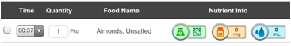
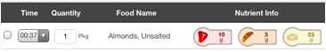

The bottom of the Summary page also includes the “Today’s Nutrient Intake Progress” box. This box allows you to quickly view your current nutrition intake for the day compared to your daily targets:

The "Current Nutrient Intake Progress" box will display Calories, Sodium, and Fluid progress first. You may also use a swipe left action on this area of the screen to display additional nutrition progress values.
After performing this swipe action, the values for Fat, Carbs, and Protein will be displayed:
